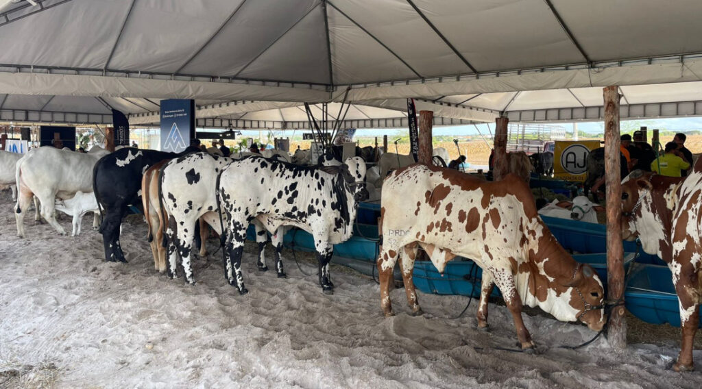

O que eu mais gosto em Nossa senhora da GlÓRIA
Quadra de esportes

A quadra poliesportiva é um verdadeiro hub de atividades, um local vibrante onde o esporte e a integração social se encontram. Seja para a prática de futebol de salão, basquete, vôlei ou handebol, sua versatilidade a torna um espaço essencial em escolas, clubes, condomínios e praças públicas. Com marcações específicas para diversas modalidades, a quadra incentiva a prática regular de exercícios físicos, contribuindo para a saúde e bem-estar de pessoas de todas as idades. Além do aspecto físico, ela é um palco para o desenvolvimento de habilidades como trabalho em equipe, disciplina e respeito às regras. Mais do que um simples local para jogar, a quadra poliesportiva é um ponto de encontro, onde a diversão e a competição saudável caminham lado a lado, fortalecendo laços e promovendo um estilo de vida ativo.
Expo Glória
A Expo Glória é um evento realizado anualmente, a exposição se consolidou como uma vitrine do potencial do agronegócio local e regional, atraindo milhares de visitantes, entre produtores rurais, empresários e o público em geral. O evento, que tradicionalmente ocorre no Parque de Exposições Cidade do Leite, é um reflexo da força da bacia leiteira da região, uma das mais importantes do Nordeste. Durante os dias de festa, a Expo Glória movimenta a economia com leilões de animais de alta genética, torneios leiteiros que premiam os animais mais produtivos e a exposição de máquinas e implementos agrícolas de última geração. Além disso, a feira abre espaço para a agricultura familiar e o comércio de produtos da terra. Para além dos negócios, a Expo Glória é um grande acontecimento cultural. A programação artística é um dos pontos altos, com shows de artistas de renome nacional e a valorização de talentos locais, garantindo entretenimento para todos os públicos.
Feira ao ar livre

A Feira Livre de Nossa Senhora da Glória: Um Coração Pulsante no Sertão Sergipano A feira ao ar livre de Nossa Senhora da Glória, reconhecida como Patrimônio Cultural Imaterial do Estado de Sergipe, é muito mais do que um simples ponto de comércio. É o coração pulsante da "Capital do Sertão", um evento sociocultural que mobiliza a cidade e atrai visitantes de toda a região, estendendo-se da manhã de sexta-feira até a tarde de sábado.
E existem muitos outros lugares interessantes na cidade
- Igreja matriz
- Igreja nova
- Praça de eventos
- E mais